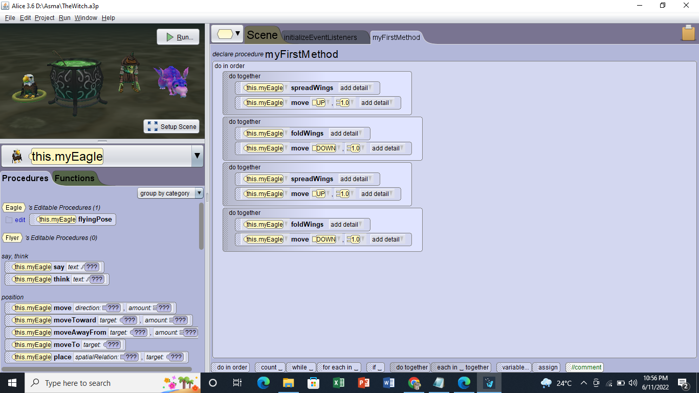
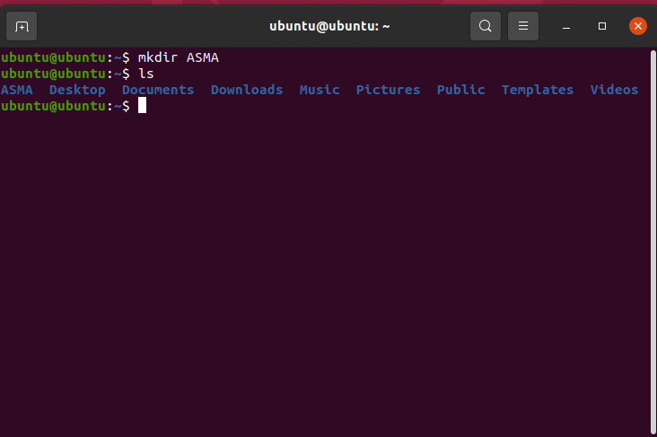

Okay I will tell you guys briefly, so in my semester 1 there are three subjects that are basically a Computer Science relatable.
The subjects are:
CSC116 - INTRODUCTION TO COMPUTERS AND PROGRAMMING
CSC126 - FUNDAMENTALS OF ALGORITHMS AND COMPUTER PROBLEM SOLVING
CSC253 - INTERACTIVE MULTIMEDIA
Firstly, for subjects CSC116. In CSC116 I've got to learned how to use Alice 3. Eventhough, for me it is a bit hard and confusing but I did understand some of the concept and get to finish the Lab assessment that my lecturer gave it to me. Not just that, I also got to do a full Alice 3 with the coding for this CSC116 assignment.
This is the first time I am using Alice 3 for LAB 1 in CSC116

Next, this is the assignment that I have done in CSC116 subjects
Please kindly click the Youtube logo to watch my Alice 3 assignment. (Note, I think I did the assignment very awful because I found it very funny after I rewatched it again yesterday:))
Alright the next one, for the second subjects is CSC126. In this subjects I've learned about C++ which is a programming language. On this subject, I got to explore that C++ is a very popular programming language, we can develop operating systems, browsers, games, and so on with C++. To be honest, I also find that it is hard for the first time I started learned it.
This is the examples in C++ that I have done for my assessement and assignment in CSC126 subjects. (Note, I am truthfully sorry for my incompetent in coding because I am really bad at coding)
THE OUTPUT
The next examples
THE OUTPUT
The next examples
THE OUTPUT
(Note, please ignore the file name of the C++ because I just had a hard time to think of a name to save it into a files)
Moving on, to the last subject of Computer Science in my semester 1 is CSC253. For me on this subjects, it is very fun because I got to learned on how to do a photoshop, edit a video and also making a stop motion video. I think I am okay with this subject rather that CSC116 and CSC126 but fairly life is always full of ups and downs but we must not let it bother us to continue moving forward in life.
This is all the assessment that I have done in CSC253 subject
This is me, my lecturer ask all of us to photoshop our own face to become an avatar. It is very funny and I don't even look like avatar thoo (It is an avatar version hijab style hahaha).
This is another assessment for CSC253, my lecturer ask all of us to do a comic cover by forming a group of 4 but the comic cover was assign individually.
This youtube link is our another assignment for CSC235, that is a lip sync project. We must make a music video and do a lip sync with the song that we have choose. For me, it is a new experience to shoot a music video because it does really feel like I am recording a M/V for real. (Note, this assignment is a group project)
This youtube link is also our another assignment for CSC235, that is a stop motion project. We must make a stop motion video and it is up to us on what kind of stop motion video we would want to make. This assignment teach me that it is not that easy to do a stop motion videos. (Note, this assignment is also a group project)
SEMESTER 2
Alright, so in my semester 2 there are two subjects that are basically a Computer Science relatable.
The subjects are:
CSC159 - COMPUTER ORGANIZATION
CSC186 - OBJECT ORIENTED PROGRAMMING
Okay let's start with the first subject which is CSC159. On this subjects, I've have learned about the historical of the computers, how to draw a logic circuits, creating a truth tables, how to convert for decimal to binary, binary to decimal, decimal to haxadecimal and more. I think, that CSC159 subjects is actually not that hard but I also think that I should study smarter and always do the exercises to fully understand the questions. Not just that, I also got to learned an Assembly Language in this subjects.
This are the examples of the exercises that I have done for CSC159.
This is a logic circuit exercises
This is a truth table exercises
Here is the examples of Assembly Language that I have done on this subjects
Then let's move on to the next subjects which is CSC186. This subjects is really challenging because it is the first time I learned about JAVA. CSC186 for me is hard because you need to really knows how to do the coding very well and if you do it wrong then the output will not come out at your screen.
This is the JAVA exercises that I had done in this CSC186 subjects
Here is the assignment that me and my group do for the CSC186 assignment. We are making a hotel booking system in JAVA for this assignment.
SEMESTER 3
Next, I will tell you guys about the last semester that is semester 3 (because I am currently in semester 4 so I did not have done many of the exercises yet.. I am truthfully apologize about that). But it does not matter we will just continue with semester 3.
So in my semester 3 there are also two subjects that are basically a Computer Science relatable.
The subjects are:
CSC204 - PRACTICAL APPROACH OF OPERATING SYSTEMS
CSC248 - FUNDAMENTALS OF DATA STRUCTURES
Alright, then let's take a quick look for the subjects CSC204. On this subjects, I have learned about operating sytems which is ubuntu, I also learned how to make command at command prompt, file allocation methods, basic linux commands, memory organization, memory management and many more. The things that I found interesting was that I have finally got to download and install the operating systems that is Ubuntu. It is a great experience because I get to learned more about operating system in this subjects.
This is examples that I have try the command in linux at Ubuntu

This is one of the command prompt that I have done in this subjects
For the last subjects, that is subjects CSC248. For this subjects, I am still learned about JAVA but more deeper into JAVA specifically. I have learned about bubble sort, array list, queue, and stack on this CSC248 subjects. To be honest, this subjects is very hard and I am quite sure that I almost did not make it on this subjects. But allhamdullillah I did passed this subjects fairly.
Here are the examples of exercises that I have done for CSC248 subjects
Here is the examples of bubble sort and array list exercises
This is for queue exercises
This is for a stack exercises
And here is the link to our CSC248 assignment video
This link will guide you to our assignment for CSC248 subjects